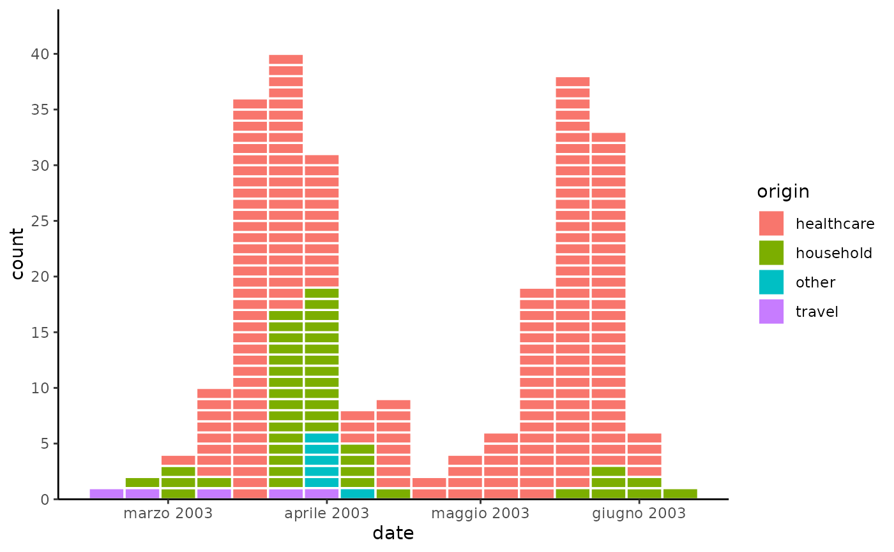
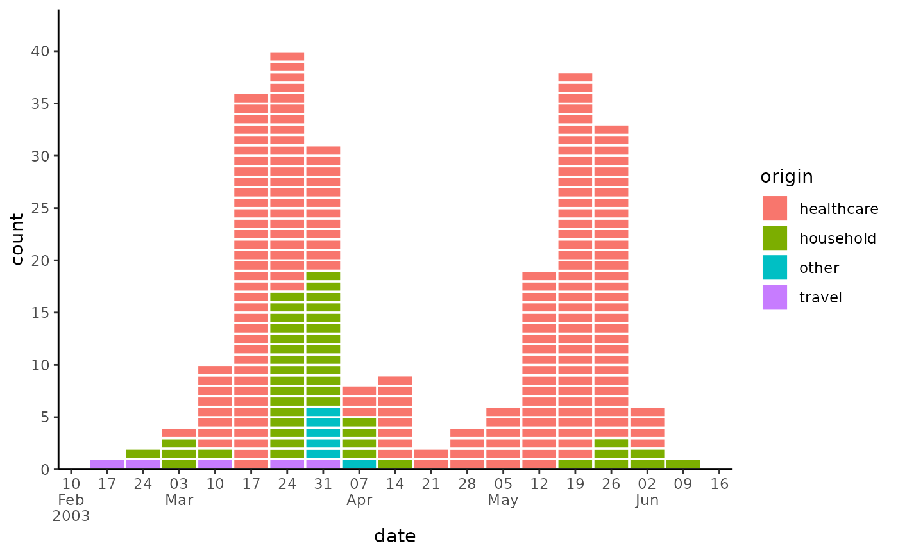

Re-export from the scales package.
Can be used to overwrite the default locale of date labels.
label_date_short()only labels part of the dates, when they change, i.e. year is only labelled when the year changes.See
scales::label_date()andscales::label_date_short()for more details.
Usage
label_date(format = "%Y-%m-%d", tz = "UTC", locale = NULL)
label_date_short(
format = c("%Y", "%b", "%d", "%H:%M"),
sep = "\n",
leading = "0",
tz = "UTC",
locale = NULL
)Arguments
- format
For
label_date()andlabel_time()a date/time format string using standard POSIX specification. Seestrptime()for details.For
label_date_short()a character vector of length 4 giving the format components to use for year, month, day, and hour respectively.- tz
a time zone name, see
timezones(). Defaults to UTC- locale
Locale to use when for day and month names. The default uses the current locale. Setting this argument requires stringi, and you can see a complete list of supported locales with
stringi::stri_locale_list().- sep
Separator to use when combining date formats into a single string.
- leading
A string to replace leading zeroes with. Can be
""to disable leading characters or"\u2007"for figure-spaces.
Examples
library(tidyr)
library(outbreaks)
library(ggplot2)
# Change locale of date labels to Italian
sars_canada_2003 |> # SARS dataset from outbreaks
pivot_longer(starts_with("cases"), names_prefix = "cases_", names_to = "origin") |>
ggplot(aes(x = date, weight = value, fill = origin)) +
geom_epicurve(date_resolution = "week") +
scale_x_date(labels = label_date("%B %Y", locale = "it"), date_breaks = "1 month") +
scale_y_cases_5er() +
theme_classic()

# label_date_short()
sars_canada_2003 |> # SARS dataset from outbreaks
pivot_longer(starts_with("cases"), names_prefix = "cases_", names_to = "origin") |>
ggplot(aes(x = date, weight = value, fill = origin)) +
geom_epicurve(date_resolution = "week") +
scale_x_date(labels = label_date_short(), date_breaks = "1 week") +
scale_y_cases_5er() +
theme_classic()
